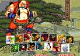
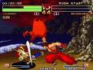

Samurai Showdown
 De: La Frikipedia, la enciclopedia extremadamente seria.
De: La Frikipedia, la enciclopedia extremadamente seria.
De la serie Videojuegos:
Samurai Showdown

| Desarrollado por:
|
Un emo y en señor de la limpieza de SNKK
|
| Distribuido por:
|
de lexes a mogollón
|
| Diseñado por:
|
Tartatino y Roger Collejez
|
| Motor
|
el de un tractor viejo
|
| Género(s)
|
Gore hasta matar
|
| Fecha de lanzamiento:
|
de botes de cerveza al cráneo
|
| Modos de juego:
|
el misionero, la perrita, el trenecito y el 69
|
| Requisitos:
|
beber 832 cervezas al día y haber atentado contra las torres Kio
|
| Disponible en:
|
un templo shaolin
|
| Formatos:
|
en caja de pino, de caoba, de roble, de eucalipto o de palmera
|
| Edades:
|
a partir de lo 666 años
|
| Puntuaciones:
|
32 en la barriga por que te abran en canal
|
por el momento me quede atonito
Samurai Showdown (samsho para los amigos y lolita para los muy amigos) es un juego que no conoce ni Dios. Fue creado por los padrazos de los juegos de yoyas: SNK. Este juego que no tiene nada que ver con todos los anteriores o predecesores (porque es el juego más gore de SNK), se diferenciaba porque los luchadores sufrían el llamado churruscamiento o "efecto bombas que te jodían en mitad de la pelea.
Samurai Showdown 1
Un grupo de mataos (o por matar) heroes se reunen para meterse de leches en diferentes lugares del cuadrado y machacar a un puto emo que quiere invocar a su dios emo para que toda la humanidad se suicide, pero los heroes no se detendrán(básicamente porque les han pagao la mitad por adelantado y les dieron un bocata de chorizo). Los elegidos son:
- Galford: un puto Yanki (siempre tienen que meter las narices en medio) que siempre va con su perro sarnoso al cual
porculiza cuando no tiene nada a mano cuida con mucho cariño (con decir que él se pone la antirrabica por el) Este se mete en el lío porque está cansado de su perro y quiere liarse con una tiparraca que le ponen los pájaros moza de buen ver que se llama Nakururu, además tiene el comodín de que a la tipa le gustan los animales (por eso prefiere al perro que al joputa ese). El tipo te ataca con su navaja de wyoming (el albacete americano) y te tira rayitos de vez en cuando. Incluso es tan vago que manda atacar al puto perro por él. Aparece en todos los juegos el jodío.
- Nakururu: una tipeja que vive en medio de un poblacho perdido en las montañas. Va sienmpre con el periquito que le regalaron en su primera comunión para
montarse orgías zoofilicas echar a los tipos feos del pueblo. Cueando conoció al cabrón del yanki decidió arrimarse a él por el perro (por probar cosas nuevas). Al final del Samurai Showdown 2 muere la muy zorra, pero vuelve a aparecer en el siguiente.(es una de las fijas)
- Tam-Tam: un salvaje que vive en la isla de "miserable, pero es un tipo majo (eso sí, cuando le quitas el cacho espadón que lleva). Es amigo de Earthquake ya que un día se atrevió a comer el chili del manicomio guatemalteco, pero el cometió la insensatez de beberse una coca-cola después de tomarlo y debido a eso puede lanzar llamaradas multicolor (Que le gustan a Benimaru). tampoco tiene respeto por los muertos ya que te tira las calaveras de su familia entera, a la cual sospechamos que se comió por diversos motivos (Porque cuando te raja con su espadón parce que te va a arrancar un jamón)
- Ukyo Tachibana: también conocido por ser el señor "esta katana es mía", porque el muy cabrón solo la suelta cuando lo matan. Tiene pinta de enfermillo y tose mucha sangre (12 galones de los 140) y parece estar a medio camino entre un friki y un emo (algo rarillo), ya que cuando ve a una tía, lo único que hace es correr
se. Su ataque más letal es "mira como corto la manzanita" en el cual tira una manzana(con las cuales podría solucionar el hambre en el mundo, ya que son infinitas), tú intentas cogerla (porque eres un muerto de hambre) y el te rebana el pescuezo.
- Wan-Fu: este era un borrico perdió la espada y se tuvo que conformar con ir a una obra y mangar un tabique para poder arrearte de collejas y
metertelo por el culo porculizarte con él.
- Char-lote de navidad: esta franchute de los güevos se metió en el torneo por orden del Sarkosí y la liga mundial del tocapeloteo. La tiparraca ye daba con ese prototipo de salchicha de Frankfort que llevaba pegado al brazo con diversos ataques como pincharte, pincharte más, pincharte, pincharte en el aire, el ataque "aprende geometría conmigo" y el "pincho descorchador de gaseosa". No se puede verificar, pero multiples fuentes
me han verificado que puede ser una antepasada de King, de KOF.(o al menos tienen la misma voz). También es otra de las tías que aparece en todos los Samurai Showdown.
- Gen-Han: es el abuelo de Carlos Blanka, de isla(y el tipo es feo de narizes). Ataca con un guante de cocina muy grande y dice que está casado(si este engendro consigue una tía, es que somos tontos). El tipo no consigue cargarse a los especuladores (porque son semi-inmortales) pero si les da miedito y este bicharraco desaparece en Samurai Showdown 3.
- Hattori Hanzo: no es nada más que Hattori el ninja, el de la serie que veías de pequeño, solo que han utilizado la Nabruto. El tipejo este está en casi todos los Samurai Showdown.
- Jubei: un tipejo al que Ukyo le cruzó la cara un día cuando se apostaron mil pelas y una prisionera a que no era capaz de ganarle sin las Katanas. Este tipo lleva dos espadas que meten una caña que flipas y además trabaja para el gobierno (o sease, es un funcionario). El tipo quiere limpiar el reino de todo tipo de presencia desagradable (osease, los n00bs de la época), y para ello arramblará con todo lo que encuentra. En el Samurai Showdown 2 con el final de una tipa el pobre hombre la palmaría.
- Haohmaru: un tipejo que pasaba por enfrente de un tablón de anuncios y decidió anotarse al rollo. Este tipo es
un joputa mayor un falso porque el tipejo también es conocido como el señor remontada. Este lo que hace es hacerte creer que le has ganado y luego hacerte algun ataque como hacerte un tornadito que te deja fino o darte una patada en los cojones dependiendo de la situación. Otra cosa poco conocida de este individuo es que es el tataratataratatara(bueno, se entiende¿no?)abuelo de Ryotsu, el poli imbécil de Kochikame. Sale en todos los Samurai Showdown.
- Kyoshiro: un tipo con voz de afeminado que se dedicaba al teatro, pero debido a problemas con el director de su última obra "cebolletas con zanahorias fritas", fue despedido y para realzar su cache tenía que meterse en el rollo o hacer de chapero. Lleva la lanza con la que le cortó la cabeza a su productor y se dedica a hacer la pata coja durante toda la pelea, pero mucho ojo que el tipo es mú peligroso.(Sobre todo si te cuenta como van a acabar las obras de teatro que vas a ver)
- Earthquake: un puñetero gordo seboso que pensó que podría comerse a sus contrincantes si se los cargaba. El tipo tiene un potencial letal bioquimico que ni el chili especial del manicomio guatemalteco y tiene la capacidad de lanzar fuego. Puede que el tipo parezca no ser muy rápido, pero como te descuides te rebana un brazo o te mete un cuesco (no, no puedes elegir). En comparación con SVC Chaos, el tipo en este juego parece una inmunda bola de sebo con patas.
Samurai Showdown 2
 aquí está toda la peña del 2(y los programas enemigos)
Terminado el anterior jueguecico todos pensamos que todo iba a estar en paz, pero una Jessi fumada decide ir a acabar el trabajo del pringadillo (o pringadilla) del anterior juego. Se vuelven a reunir todos los imbéciles del anterior juego excepto alguno que otro por causas desconocidas como ser convertido en un mono, tener la pierna rota o estar encerrado en un nido de Wombats. Los nuevos fichajes de SNK en este nuevo truño juego son:
- Cham-Cham: es la hermana pequeña de Tam-Tam. El muy imbécil ofendió a MonEsVol y este decidió no matarlo y lo convirtió en mono, pero sigue haciendo las mismas putadas de tirarte la calavera de su abuela o lanzarte una llamarada multicolor. Su hermana armada con su bumerán de la suerte(hecho con pino gallego), se dispone a acabar con la jessi para que MonEsVol restaure a su hermano. Puede parecer una adorable niñita, pero mucho ojo, que la cria es tarzana de sabediosdonde y se convierte en león para masacrarte a la mínima.
- Genjuro: un pringadillo social al que echaron de casa porque sus cromos acabaron devorando a sus cuatro hermanos. Es un puto borracho que no tiene un duro y menos donde caerse muerto. Ahora, tras un duro y arduo proceso de descomposición cerebral, es la simbiosis definitiva entre el hombre y en coleccionable adhesivo que te venden en el quiosko debido a su telepatía cromil. Si juega en internet a las cartas ganará hasta al garrota más experimentado (ya que hace que los cromos lo ataquen a él). Va de lado a lado arreando de katanazos a tó el mundo para creerse más
gay guay y tirándote sus cromos asesinos para que te porculicen salvajemente y no dejen ni tus restos te cortes con ellos.
- Sieger: este solo es el primo gallo al octavo pino de un hostión.
- Nicotine (el hombre tabaco para los amigos): es el primer hombre en la tierra al que se le ocurre beneficiarse del tabaco (hasta ese entonces sono había marihuana) Es un viejo con un gorro enorme que ofrecía sus productos a los viajeros. Cuando se dió cuenta de que el tabaco mataba decidió convertirse en un asombrosa máquina de matar tabaqueril. Sus ataques básicos consiste en lanzarte papel de fumar que te provoca una sobredosis de nicotina o te quema un poquito. Su ataque más potente es lanzar una horda de fumadores con el mono contra tí.
Samurai Showdown 3
En este Samurai Showdown vuelven a aparecer los mismos caretos de siempre, salvo por unos pocos nuevo que quieren combatir la nueva amenaza (que no sé cual es porque he jugado poco) Los nuevos pringadillos son:
- Shirou Amakusa: este es el emo del primer Samurai Showdown, solo que en vez de cortarse las venas al darse cuenta de su fracaso, el tipo como quiere joder se mete en medio para joder aún más. Realmente se desconoce su sexo, dado que parece una mujer (normal siendo un emo) y tiene voz de pito que te cagas. Además se desconoce como puede matar arreandote bolazos.(y aún más por que no se ha matado)
- Basara: tiparraco hiperdrojado que es el eslabon hiperesquizofrenico y perdido entre Iori Yagami e Inuyasha. El tipo lleva un Shuriken que te cagas y que a la mínima te manda al camposanto con un riñón fuera. Entre otros ataques ataques puede lanzarte una nube de humo de porros que merma tu capacidad de reacción, cogerte y darte de hostias en un sitio mú oscuro y mandar a shuriken a Madrid, que tu te confíes y que después te meta un collejón del quince. Se metió en el rollo para rescatar a su novia, la cual murió de sobredosis ( y por un montón inmenso de droga)
- Gaira: tipo que es bolas chinas con las cuales te arrea leñazos que te dejan eslomao. Puede parecer una enorme mole de músculos sin cerebro, pero el tipo hace cada putada que te puede dejar besando sus pies (es que esun fetichista).
- Rimururu: esta solo es la prima lejana de Nakururu. Esta no es zoofílica como su prima, sino que es hielofílica (osease, que le mola el hielo). Puede parecer una niña inofensiva, pero si te descuidas te raja en ocho con el cuchillito que lleva. Además, es una fábrica de hielo andante que se dedica a lanzarte hielo en variantes diversas.
- Shizumaru: este criajo se dedica a ir por ahí con su crío puede ser muy traicionero y te puede hacer hasta más de treinta modalidades de la técnica "mete el paraguas y retuerce". Es un idiota perdido ya que el tipo cuando acaba la pelea te pide perdón después de haberte matado.
Samurai Showdown 4
 Aquí vemos a Kazuki abusando de un niñito
El mismito que el anterior. Mantuvieron los mismos modos (que eran una mierda), la misma historia (que era una mierda) y las mismas sodomizaciones (que eran una mierda). Lo único nuevo fueron un par de joputas que uno se dedicaba a dar por culo y otro se dedicaba a drogarse frenéticamente dos tipejos que SNKK se sacó de la manga (o del gayumbo, porque son una mierda), la ocasión de poder hacer fatalitys (ya copiando los jodíos) y que volvieron a sacar a Tam-Tam.Los dos tipejos que creó SNK a partir de un pedazo de mierda son:
- Sogetsu Kazama: este tipo es el primo por parte de oveja de Kazama, el de Shin Chan. No hace falta decir que es un mariconazo de aúpa porque se ve a la legua con sus poses de ataque y su estilo de ganar que es un puto marica, además de ser de elemento
mierdoso akuoso. Su fatality consiste en porculizarte hasta la saciedad hasta que te vuelvas gay del todo meterte la espada por el culo (ya sé que se abusa de esta técnica).
- Kazuki Kazama: es el hermano del anterior pringao, el cual es de elemento fuego. Es un puto frenético (se sospecha que es yonki) y tiene cierta tendencia emo por una ataque suicida que tiende a hacer el muy cabrón. Su hermano quiere
porculizarlo salvajemente darle una lección y este quiere darle droja. Su fatality consiste en freírte y luego darte de comer a una horda de yonkis hambrientos (osease, él y sus amigos)
Samurai Showdown 5
¡¡¡POR EL CULO TE LA HINCO!!!
|
|
 Shooter Shooter
 Terror Terror
 Velocidad Velocidad
 Rol Rol
 Estrategia Estrategia
 Aventuras Aventuras
 Fight! Fight!
 Clásicos Clásicos
 Deportivos Deportivos
 Aventura gráfica Aventura gráfica
 Novela visual Novela visual
 Personajes de videojuegos Personajes de videojuegos
|
Autor(es):
- Frikiman
- Khazike Khashondo
- ArreKarallo
- Dark temptation
- Catacras
- Juan topo
- Magiclopez
- Bladguer
- Ultimatekaisergreymon
- Gñapero Solitario
Frikipedia 2005-2016, Licencia
GFDL 1.2 - Extraído por FrikiLeaks